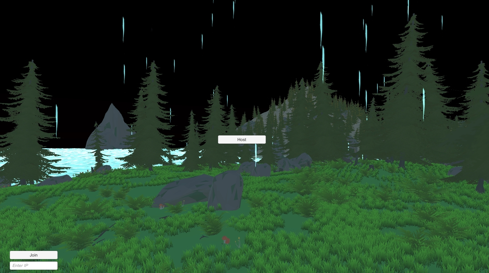
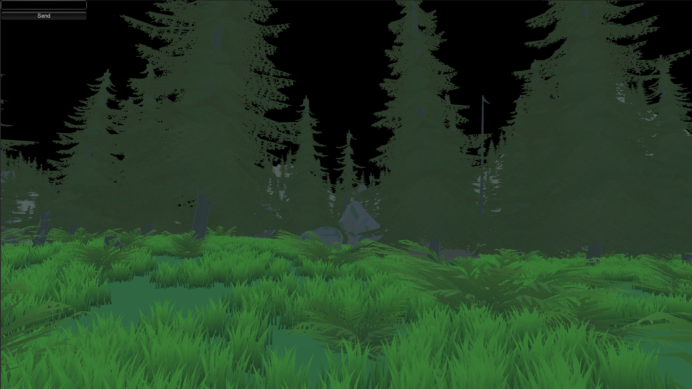
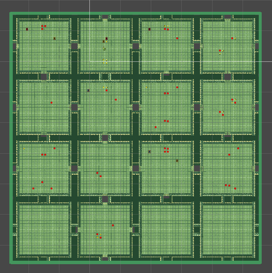
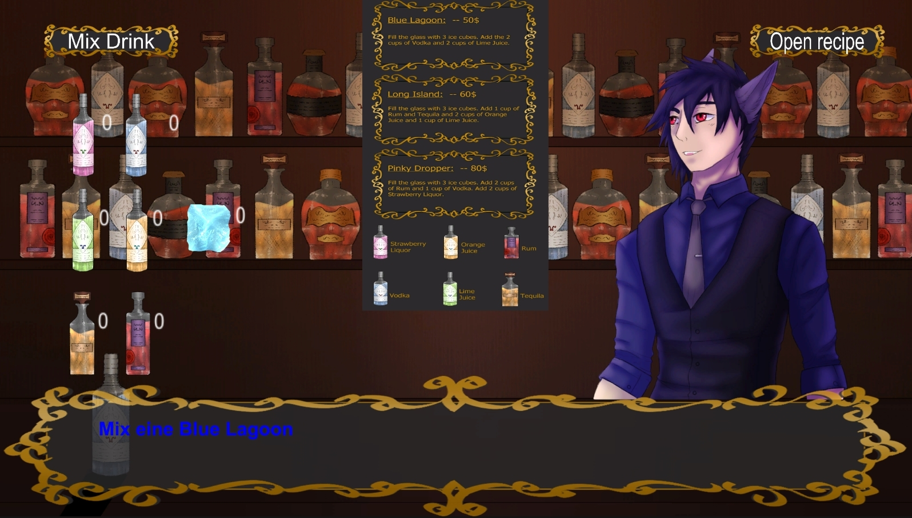
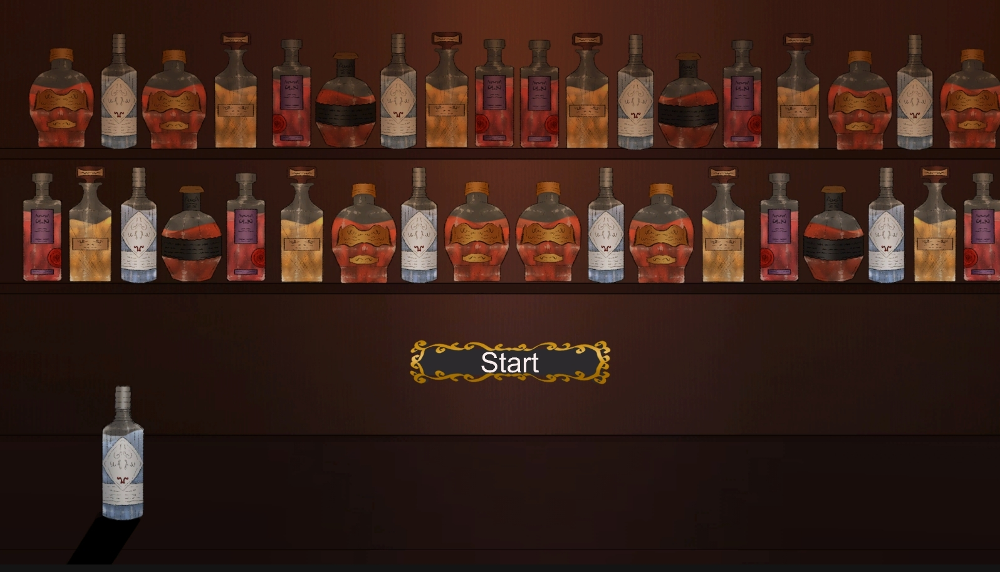

Multiplayer FPS
 A Multiplayer FPS prototype I build with the MLAPI. It can be played together either over the same network or also with an IP connection. The server can be hosted by one player and the other connects as a client. For the prototype version the game is a deathmatch like game mode.
I build this project with the intention in mind of making it easily expandable in different directions. No matter if Survival Shooter or RPG Shooter. There is already an implemented weather and day/night system which can be used in various possibilities.
Random generated Dungeon Crawler
A 2D Dungeon Crawler prototype which is unique with every start. The rooms which are customizable through prefabs are randomly arranged but still create the important path into the last room which would be for a boss.
There are enemies which have a detection radius. Coins that can later be used in a shop and powerups which can help the player get stronger and faster. All of those randomly generated as well.
Bartender Visual Novel
 A Point and Click Visual Novel created in collaboration with a classmate who made the assets while i programmed the game. The player reads through dialogue and mixes drinks for the customers as requested
All of the dialogue is stored in a text document, which makes it easy and fast to edit for everyone involved in the project. Once the player needs to mix a drink its checked through the scripts if they mix the right amount with everything. A menu with all the required ingredients for each drink is available as a drop down menu with a button in the UI system. The player can continue the game with mixing and offering the right drink.